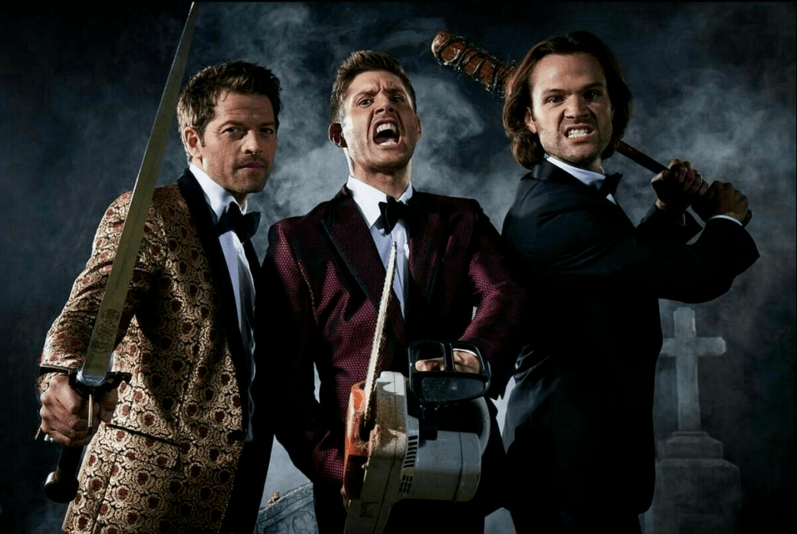

Удалённые сцены 15 сезона выйдут на Blu-ray
Удалённые сцены 15 сезона выйдут на Blu-ray. Warner Bros. Home Entertainment объявили, что пятнадцатый и последний сезон сериала «Сверхъестественное» от The CW наконец-то выйдет на Blu-ray. Кроме релиза последнего сезона в домашнем прокате, анонсировано полное издание шоу на Blu-ray. Все пятнадцать сезонов (а это 327 эпизода) популярного сериала войдут в массивный набор. У сериала, возможно, был неоднозначный финал, но фанаты вряд ли откажутся от покупки этих бокс-сетов, особенно с учетом того, что в наборе будут бонусные материалы. Так, на бонусном диске будут сразу два короткометражных фильма, удаленные сцены и ролик с неудачными дублями.